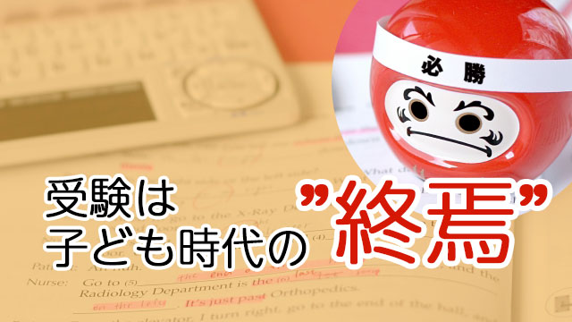

全くもって我が子の受験ほど親としての精神力というか胆力を試されるものはないと実感します。
どんなに冷静沈着な親であっても、我が子が受験に臨む際「大丈夫か」「うまく行くのか」「力をちゃんと出しきれるか」とアレコレ悩まずにはいられないものです。
何千人もの受験生を見てきた私でも、やはり我が子の受験には心が揺れるし、受験指導のプロだからこそ我が子のちょっとした動作にも「これはヤバイ！」と瞬時に反応してしまうことがあるのです。
前回の記事で「我が子を心配するな」とか「親こそ内面と向き合え」と偉そうにいっておきながら何だと思われるかもしれませんが、私も一人の親として受験生を抱える親の気持ちは理解できるし、その上で多くの親と接してきて“陥りがちなワナ”にも気がつける立場にいると思っています。
さて、年が開け、いよいよ受験シーズン。
ここから短いようで長い「我が子の受験」が始まります。
この期間、子どもより重圧を感じて疲弊してしまう親も多い中、ちょっと立ち止まって、頭を冷やし冷静になれるヒントにでもなればと少し書いてみようと思います。
（…と言いながら自分に言い聞かせるために書いている部分もあることを告白しておきます。）
不安は子どもとの同一化から生まれる
当たり前のことを聞くようですが、なぜ我が子が受験だというと心配したり不安になったり焦ったりするのでしょうか。
答えは「我が子」だからですよね。
他人の子ならこんなに心配になならない。
ではなぜ我が子だと心配になるのか。
これまた分かり切った回答ですが、親にとって我が子はアイデンティティの一部だからです。父親もそうですが、特に母親にとってはお腹を痛めた我が子は自分の一部であって切り離せる存在ではありません。
考えてもみて下さい。「子どもが熱を出した」「ケガをした」「友人にイジメられた」「運動会でビリになった」そんなとき親であるあなたは自分のことのように胸が傷んだのではないでしょうか。
我が子に起こることは自分に起こったも同然という思いは親なら誰しも経験するところです。
これは理屈を超えた本能的な感情です。
従って親の「心配」は子どもが幼いときには安全を図り、生存を促す上で重要な助けとなるものです。
しかし、子どもが思春期を迎える頃にはこの「自己同一化」はかえって邪魔な存在になります。たとえば子どもの成績が振るわないことを心配するとき、親は子どもの成績と自分を同一化し、まるで自分が「ダメ出し」されたかのように感じてしまうことがあります。
受験でも同じことが起こります。
だいぶ昔ですがこんなことがありました。
ある有名大付属高校を受ける女子生徒のお母さんと面談したとき、私が「ちょっと難しいかも」と言うとお母さんは「夫も彼の親も親類も皆○○大学出身なんです。そんな中でウチの子だけが落ちたら私のせいだということになってしまう……」と疲れきった表情で話すのです。
私はこのお母さんを「それは親の見栄だ」とか「嫁としての立場しか考えていない」と責める気にはなりませんでした。
「娘の失敗は自分の失敗である」という、子どもとの同一化に捕われていると思えたからです。
このように子どもと自分を無意識に同一化することは、子どもにも重圧を与え心理的に追い詰めることになりがちです。
結果として受験は、子どもにとって「自分のため」というより親の期待に応えることが主要な目的となってしまいかねません。
（先の女子生徒も入試直前、授業中に突如泣き出したりと情緒不安定で、我々を困惑させました。）
同一化からの呪縛を解く方法
ですから子どもの受験をひかえて不安や心配が高まってきたら、ちょっと立ち止まって「この心配は子どもとの同一化から起こっているのでは？」と振り返ってみて下さい。
ここで注意したいのは、子どもへの「心配」「不安」を打ち消したり否定することではないということです。心配・不安を感じること自体は自然現象と考えて、良いとか悪いとか判断しないで下さい。
ましてそのことで自分を責めたり罪悪感を持つなどもってのほか。見ないふりをするのではないのですから。
ただ“それがある”ことを認め気づくだけで良いのです。「ああ、心配がいまここにあるんだな」と気づくだけで重苦しさは消えます。
その上で心配と不安は親としての一種の本能であり、プリミティブな感情に過ぎないと認めればしつこい同一化の呪縛からも解き放たれるかもしれません。
これはどんな感情でも同じです。
「いま怒っている」「いま悲しいのだ」「いま許せない気持ちになっている」
そう気づくだけでそれらの捕われから解放されます。
なぜなら感情と一体化し捕われの中で苦しんでいていても、気づくことでそれらを対象化できたからです。対象化できたということは捕われていないことを意味し、同一化は解除されたということになります。そうなれば感情は力を失います。
こうして過度の同一化─自分のアイデンティティを我が子に託すこと─から解放されると、心配は子どもに対する純粋な応援へと変わります。
すると子どもも重圧から解放されるでしょう。結果的に実力も発揮しやすくなるかもしれません。
最後に
このように子どもの受験に対する親の心配や不安は、第一に子どもとの自己同一化に起因することを認めることで軽減されます。気づくことで無用の心配・不安は消えていくでしょう。
その上でもう一つ親の皆さんにやって頂きたいことがあります。
それは我が子の受験、特に高校受験を一つのきっかけとして子どもを大人として認め手放すということです。
手放すとはもちろん養育放棄のことではありません。親子の関係を新たに組み替えるということです。
というのも受験は子どもにとって、単に合格したとかしないとかの問題ではなく、成長を促す一種の通過儀礼的な意味合いを持つものでもあるからです。
私の経験でも受験を一つの契機として、子どもが見違えるほど大きく成長した例を多く見てきました。
（この辺の詳しい事情はかつての記事“15歳のイニシエーション①～③”※←リンクをご参照下さい。）
受験勉強→受験→合否結果という一連の経験を通して子どもたちは変容をとげるのです。
今まさに受験に臨む子どもたちは、その変容のプロセスにあるのです。
親が心配していようといまいと子どもはそのプロセスをこの瞬間体験中です。
子どもが変貌（成長）したのに親が変わらないとすれば、親のほうが子どもの成長についていけてないということになります。
ですから親も「受験」を機会に我が子を大人として認め、子どもを子どもとして見続けたい思いを手放しましょう。
受験を「子ども時代の終焉」と見なすことで新たな親子関係の始まりとすることができます。
受験にはこのような肯定的な側面もあることが分かれば、我が子の受験に対しても新しい光が当たります。
そういう意味で、我が子の受験は親にとっても家族にとっても、やはり一つのチャンスと言えるでしょう。
受験をネガティブに考えず、どうか我が子の成長を見守る思いで暖かく応援してあげてください。